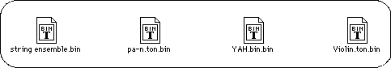
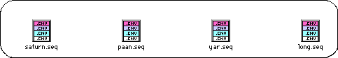
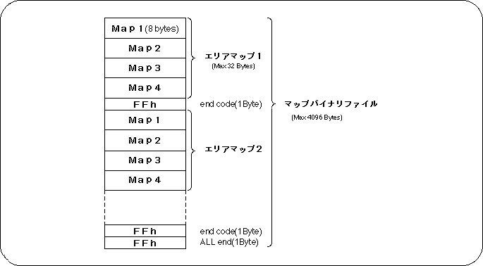
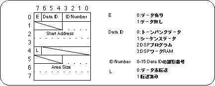
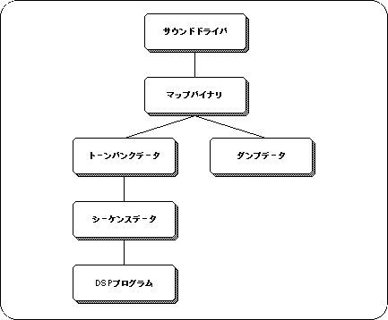
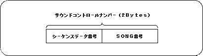

<HTML>
<HEAD> <TITLE> Sound data </​​TITLE> </HEAD> <BODY>

<P> <A HREF="../des-date/da1-3.htm"> Return to previous page </A> | <A HREF="../index.htm"> Return to menu </A> | <A HREF="da2-1-2.htm"> Go to next page </A> </BR> </P>
<HR>


<H1 ALIGN=CENTER>
Data passing
</H1>

<H2 ALIGN=CENTER>
Sound data
</H2>

<P>
<B> This chapter describes the minimum data format and operations that must be known when handing over the sound data created by the sound designer to the software using SGL. </B>
</P>

<H2> 2-1. Data types </H2>

<P>
All sound data created with Macintosh is a binary file, and is divided into the following files. </P>
<UL>
<LI> BGM, sequence data file
<LI> PCM stream playback data file
</UL>

<H3> <A NAME="NO1"> BGM, sequence data </A> </H3>

<P>
<B> 1) Tone bank data </​​B> <BR>
Tone data used for songs and sound effects. <BR>
Created with the Tone editor of the Sega Sound Tool.
</P>

<H4> Figure 2-1 Example of tone bank data file </H4>


<P>
You need as many files as you want to use for the map.
Tell the programmer the order in the map.
</P>

<P>
<B> 2) Sequence data </​​B> <BR>
Song and sound effect data. <BR>
Created by the sound simulator of Sega Sound Tool.
</P>

<H4> Figure 2-2 Sequence data file example </H4>


<P>
You need as many files as you want to use for the map. <BR>
Tell the programmer the order in the map.
</P>

<P>
<B> 3) DSP program </B> <BR>
This is an effect module program. <BR>
Created by DSP Linker of Sega Sound Tool.
</P>

<H4> Figure 2-3 DSP program file example </H4>


<P>
This is not necessary when no effect is used. <BR>
Tell the programmer the order in the map.
</P>

<P>
<B> 4) Map binary file </B> <BR>
The load address of the files 1) to 3) above and the DSP program in the 68000 memory which is the sound CPU
Specifies the work area area to be used for the program.
This file is loaded into A000h of 68000 memory.
</P>

<P>
The map can be up to 4096 bytes, can have up to 128 area maps, and one area map can have up to 32 bytes of Map information.
</P>

<H4> Figure 2-4 Map binary file structure </H4>


<P>
The bit image of each map (Map1 ~ 4) is as follows.
</P>

<H4> Figure 2-5 Bit image of MAP </H4>


<H4> Figure 2-6 Map binary file example </H4>


<P>
<B> 5) Sound driver </B> <BR>
In order to unify the version, it is certain to give the programmer the ones that come with the Macintosh sound tools.
</P>

<H4> Figure 2-7 Sound driver </H4>


<P>
<B> 6) Dump data file </B> <BR>
This is a dump of the memory from B000h to the last data of the map data with the files 1) to 3) loaded in the 68000 memory. <BR>
(However, if the last data is DSP work RAM, the previous data is dumped.)
If it is not necessary to partially load and use only the necessary banks, and all the map data is loaded at once, this dump data file can be used to load the files 1) to 3) above one by one. You do n’t have to. This eliminates the mistake in loading the data and saves the programmer.
The dump data file is created by the sound simulator of Sega Sound Tool.
</P>

<H4> Figure 2-8 Dump data file example </H4>


<P>
The following figure shows the BGM and sequence files that need to be passed to the programmer. <BR>
Give the programmer one of the following files: <BR>
</P>

<OL>
<LI> Sound driver, map binary, dump data (including tone bank data, sequence data, DSP program)

<LI> Sound driver, map binary, tone bank data, sequence data, DSP program
</OL>

<H4> Figure 2-9 BGM and sequence file to be passed to the programmer </H4>


<H4> Sound control number notification </H4>

<P>
The programmer uses the “Sound Control Number” to play a song in SGL or to play a sound effect. <BR>
The combination of the sequence data number on the sound simulator and the song number is the “sound control number”, so the sound designer can tell the programmer what kind of sound to use when passing the file. Please tell.
</P>

<H4> Figure 2-10 Sound control number passed to programmer </H4>

<HR>
<P> <A HREF="../des-date/da1-3.htm"> Return to previous page </A> | <A HREF="../index.htm"> Return to menu </A> | <A HREF="da2-1-2.htm"> Go to next page </A> </BR> </P>
</BODY></HTML>